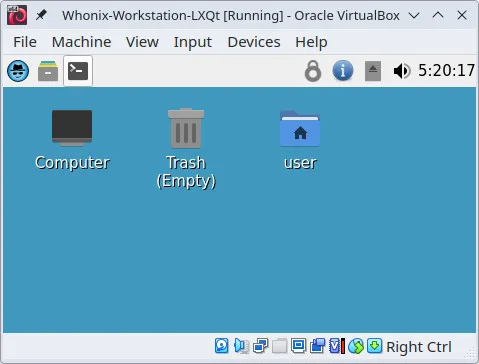

We believe security software like Whonix needs to remain Open Source and independent. Would you help sustain and grow the project? Learn more about our 14 year success story and maybe DONATE!


The differences of Whonix-Gateway and Whonix-Workstation.
Whonix-Gateway |
Whonix-Workstation |
|
Designed for |
Running Tor processes; Acts as a gateway for the Workstation |
Running user applications and online tasks securely and anonymously |
Connection to other component |
N/A (It's the gateway itself) |
Connects to Whonix-Gateway |
User applications |
Should NOT run user-centric applications |
Should be launched from here (e.g., Tor Browser, Thunderbird) |
Network connectivity |
Provides Tor connectivity to the Workstation |
Uses either the Tor network or no connectivity; Must start Whonix-Gateway first for functional network connection |
Configuration |
Anon Connection Wizard for Tor configuration; option to connect to public Tor network or configure Bridges, controlling Tor |
Pre-configured for use with Whonix-Gateway |
Purpose |
Minimal user interaction; Mainly for Tor configuration, controlling Tor, and installing updates |
For running applications and general use |
Link to Tor |
Directly runs Tor |
All applications use the Tor network when launched from here |
Importance of Startup Sequence |
N/A |
Whonix-Gateway must be started first for online functionality. Otherwise, Whonix-Workstation can only be used offline. |
Categories: Documentation